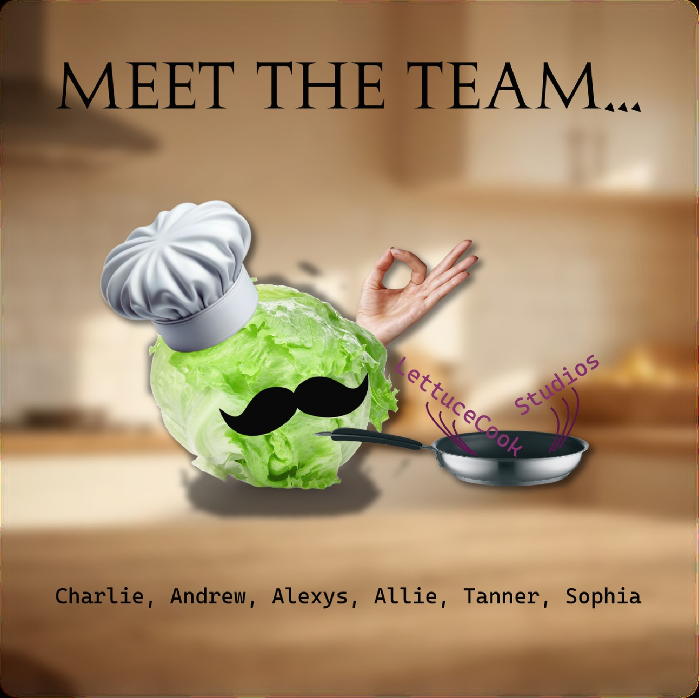
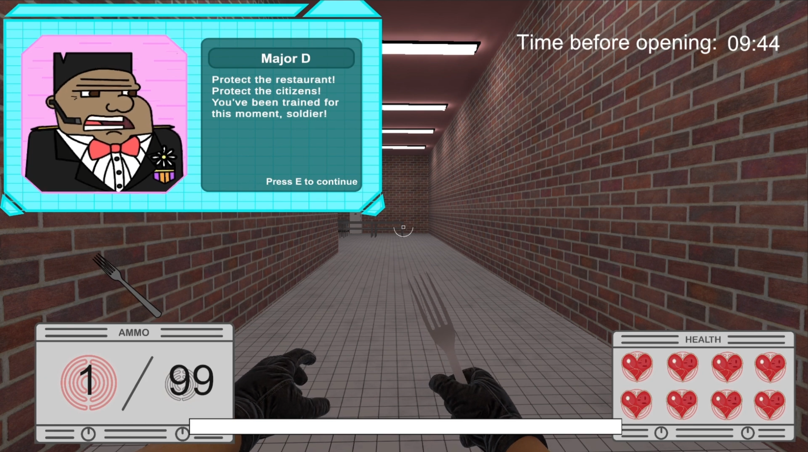
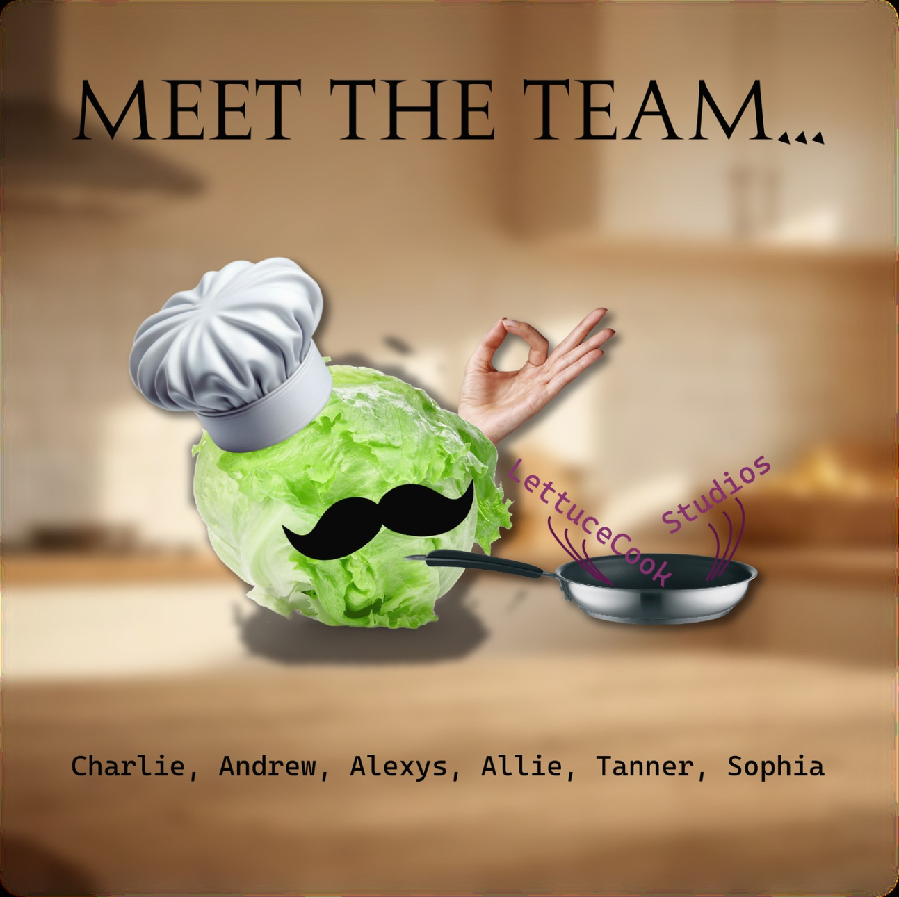
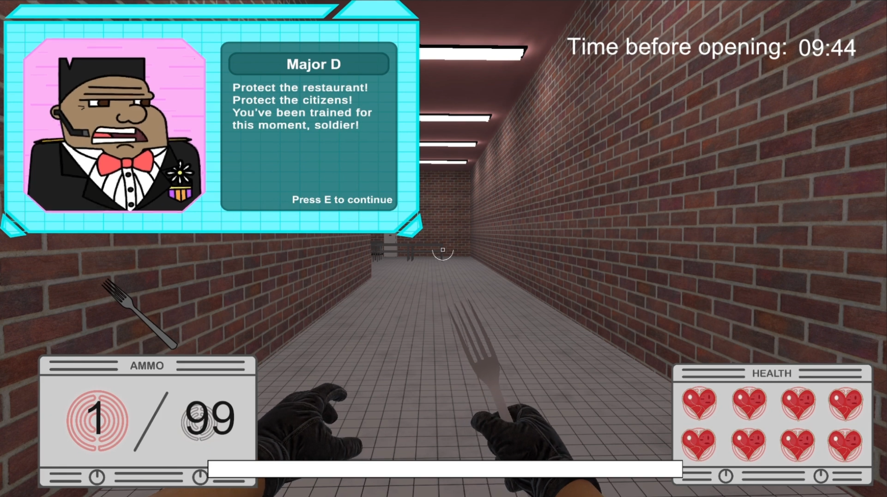

Sophia Hatheway
Game Designer & Developer
My Works
Here are some of my projects! Click on any project to learn more about it.
A fast-paced first person shooter that takes place in a kitchen setting.
 





Trailer
This game was developed in a indie-student team called LettuceCook Studios. My role was to manage the project, as well as design and implement the UI.
- Download: itch.io
- Engine: Unity
- Platform: PC
- Genre: First Person Shooter
- Tools Used: C#, Adobe Illustrator, Blender, Jira
- Duration: 4 and 1/2 months
- Team Size: 6
A single level game where the player takes the role of an older sister trying to find her missing younger brother, leading her into an abandoned carnival.
Gameplay Footage
This game was created entirely by me, utilizing my skills learned in object-oriented programming, game writing, and even 3D modeling. It was a great learning experience, despite the challenges of creating an entire level by myself.
- Engine: Unity
- Platform: PC
- Genre:Mystery
- Tools Used: C#, Adobe Illustrator, Maya
- Duration: TBD
- Team Size: 1
A meta-app for all-things dating related.


This project was one of my first ever serious software development projects. I was the UI/UX developer, as well as the person who implemented a functional login and profile system. It was developed by the indie-student team Velocity Enterprises.
- Website: hathewsg.github.io/HookLineAndSinker
- Platform: Any
- Tools Used: VS Code, HTML, CSS, Javascript, GitHub Adobe Illustrator, Firebase, Render
- Duration: 4 and 1/2 months
- Team Size: 5